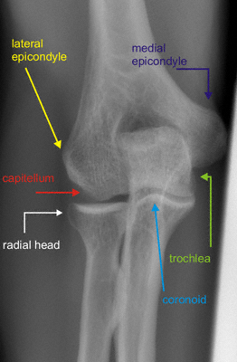
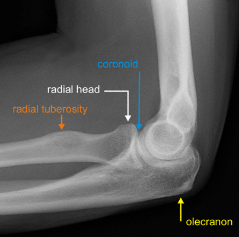

Imaging
Radiographs
- AP and lateral of the elbow are standard examinations
- AP: evaluate for other fractures, dislocations and alignment
- Lateral: demonstrates articular involvement, degree of comminution and radial head reduction

Normal AP elbow

Normal lateral elbow